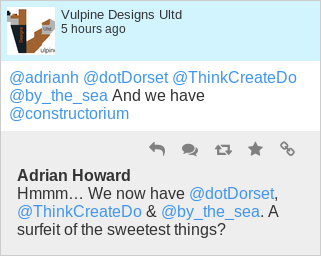
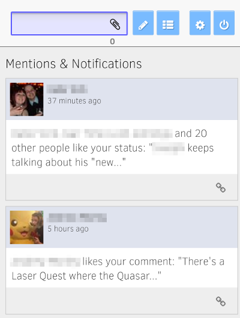

What is SuccessWhale?
SuccessWhale is a multi-column, web-based Twitter and Facebook client.
Within its interface you can set up as many different columns as you like, pulling feeds in customisable ways from the various Twitter and Facebook accounts that you have connected to SuccessWhale. For example, you could have a column that combines two Twitter lists from two different users, or one that combines Twitter mentions and Facebook notifications from across all your accounts.
Some of its other features are:
- Mobile web interface for access on the go
- Alternative login to access your social networks from locations that ban Twitter and Facebook
- Post to multiple accounts at once
- Comment, like, retweet and favourite from one interface
- Customise layout and themes to fit your screen
- "Banned phrases" support to hide those game requests
On the geekier side, there's also:
- Extensible API supporting several clients, such as the OnoSendai client for Android
- Free and Open Source so you can make your own version of SuccessWhale
What does it look like?
This is the main interface of SuccessWhale:

Each item on display comes with its own buttons for interacting with it, such as replying and retweeting. You can also view a conversation inline by clicking on the button.

Along the top of the screen are the areas for posting a new status update, including attaching pictures, and choosing which accounts the status update will be posted to:


On the Config page, you can find controls for managing the accounts you have linked with SuccessWhale, and you can add, delete, re-order and mix up your columns however you like:


SuccessWhale has a mobile interface too — just go to the same site as normal on your phone. On small screens, buttons will shrink and a swipe gesture allows you to navigate left and right across your columns. The mobile site otherwise looks just the same as the desktop one:

How do I get started?

To get started, simply sign in using one of your Twitter or Facebook accounts using the buttons on the login page. SuccessWhale will automatically set up some columns for you.
If you only have one account, you're good to go!
If you have more, visit the Config page using the button at the top right. From there you can add more Twitter and Facebook accounts. Each time you add one it'll create some example columns for you, so once you've added a few accounts you probably want to stay on the Config page and set the columns up just the way you like them.
You can also set your display options and banned phrases there, or create yourself an alternative login so that you can use SuccessWhale in places where Twitter and Facebook are banned.
Once you're happy with the configuration, head back to the main interface and get reading and posting!
Your configuration is stored on SuccessWhale, so you can log in on all your devices — including phones and tablets — and see the same interface everywhere.
I'm sold!
To start using SuccessWhale right away, why not head back to the login page right now and click "Log in with Twitter" or "Log in with Facebook"?